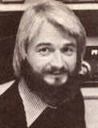

Copthorne Macdonald is the inventor of slow-scan television . . . a method of amateur radio transmission that allows ham operators to both hear and see each other during shortwave broadcasts.
One of the questions that readers of this column most frequently ask me is, "How can 1 put together an adequate ham station without spending a fortune on equipment?"
The fact is that there are many MOTHER-type folks who'd like to own an amateur radio setup, but feel they just can't afford such a "luxury". Naturally, as the economic crunch intensifies, the situation will get progressively worse, and-eventually-a lot of us are going to have to find alternatives to expensive equipment . . . so why not start now?
The "standard" long-range HF band ham rig used today is an SSB-voice and CW transceiver, which covers all five amateur bands between 3.5 and 30 MHz and runs about 200 watts input. Such rigs are made by a number of different manufacturers in the United States and Japan. Prices-in the U.S.-currently start at about $700 for new solid-state transceivers . .. $400 to $500 for used solid-state units . . . and $300 to $400 for used tube-type rigs.
A SIMPLIFIED VERSION
One idea that has surfaced several times in the past six years is that we New Directions Radio folks design and produce our own transceiver. Of course, if we did so, and incorporated all the features of the five-band commercial rigs into our unit, it would end up costing a lot itself. In my view, we'd need to tailor the design specifically to NDR needs, using maybe one or two bands instead of five, fixed frequency operation instead of variable, etc. (We could save lots of money if we dropped the use of voice and went to code, but that particular idea doesn't seem to be very popular.)
In addition to eliminating unnecessary features, we'd probably want to try some other moneysaving tricks. We might, for example, incorporate surplus gear or parts into the design of the unit . . . or convert CB gear to ham use ... or possibly try using a commercial shortwave receiver as the "heart" of the new unit. And we'd probably incorporate the new, inexpensive VMOS power transistors in our final amplifier.
Our first step, of course, would be to exchange ideas on what features the unit should have, along with information on low-cost sources of critical parts like sideband filters and power transistors. The design and debugging of a few prototypes would follow that research, and actual production could either be a group effort or become some individual's cottage industry.
If an "NDR Transceiver" strikes you as the way to go-and you have some ideas on how to make it happen-let me hear from you.
A PARTS POOL
Another approach to solving the expensive equipment problem was suggested by "Rock", W9SCH, 1124 Camille Avenue, Deerfield, Illinois 60015 . . . who bemoans the high cost of ham gear and the poor availability of parts for "homebrewing" our own equipment.
"It seems to me," he says, "that some sort of effort to pool and sell parts and gear inexpensively could be contrived . . . and such a project should be right up MOTHER's readers' alley."
Perhaps one of you with a versatile microcomputer and a little spare time would be willing to set up a parts and equipment information exchange service. Individuals could send you lists of their excess components and gear . . . you'd enter the lists into your computer's memory . .. and the computer would check those lists against specific requests. You'd then put the person wanting the part in touch with the person having the surplus, and the two of them could work out their own swap or whatever. How about it, you computer freaks? Is there any interest in trying to provide such a service?
While we're on the subject of parts, I should mention a very interesting small company that offers bare circuit boards and complete parts-package kits for some of the simpler transmitter and receiver construction projects that have appeared in the ham magazines recently: Circuit Board Specialists (Dept. TMEN, P.O. Box 969, Pueblo, Colorado 81002) will send a list of its more popular boards and kits on request.
Another firm that's been selling amateur parts for some time-and recently started marketing complete project kits -is Whitehouse and Company, Dept. TMEN, Newbury Drive, Amherst, New Hampshire 03031 (send 254 for a catalog).
OR, WHY NOT REPAIR 'EM?
Boone Seagraves (KB5KL, Route 2, Box 236M, Las Cruces, New Mexico 88001) has come up with yet another idea for making inexpensive gear available to NDR folks. He suggests that we organize a network to acquire used-and possibly nonwork ing-transceivers at bargain prices. Then we could fix 'em up and make 'em available, at reasonable cost, to folks wanting to get involved in New Directions Radio.
If we actively scrounged-contacting local hams, etc.-we might be surprised at how much dusty but salvageable equipment could be pried loose for very little money. Of course, if the person finding the rig couldn't repair it, the device would be shipped to an N DR repair center where one or more of the technically savvy among us would check, fix, and align it. Boone points out that the center would need a good stock of tubes and other parts, but that by limiting our "equipment foraging" to a few makes and models of gear, we could ease the parts supply problem. (He mentioned the Heathkit HW101 as one likely candidate.)
Are there any volunteers out there? To launch such a project, we'd need [1] scroungers, [2] folks willing to do repair and alignment work, and [3] someone who could coordinate the whole program. Again, if there aren't enough people with time to volunteer, perhaps the service could be run as a non-profit, but wage-paying, cottage industry.
And while we're considering various approaches, let's not ignore the most basic of all answers to problems caused by high prices: cost sharing. If the community of people you're involved with isn't spread out over too large an area, consider a single group-supported station instead of several individual ones.
A NEW DIGITAL RECEIVER
While most equipment prices are rising, the cost of providing digital frequency readout is-I'm pleased to say-falling. As a happy sequel to MOTHER NO. 60's column on shortwave listening, I'd like to mention the new portable Panasonic RF-2600 receiver. It features a super accurate five-digit readout, plus a narrow filter for good SSB reception. It looks like a fine receiver for both shortwave listening and ham use. Gilfer Shortwave (Dept. TMEN, P.O. Box 239, Park Ridge, New Jersey 07656) is offering the unit at $189.50 plus shipping . . . which is definitely the lowest price I've seen yet for a digital readout receiver.
Peace,
Cop Macdonald (VE1BFL)
P.O. Box 2941
Charlottetown
Prince Edward Island
Canada CIA 8C5
New Directions Radio is an international network of radio amateurs concerned with those ways of using ham radio (and related modes of communicating) that promote our own growth as individuals, and which we perceive as helping to create a more aware, more caring, and more responsible human society. We encourage all who share these interests to work with us. A current schedule of on-the-air activities is included in each issue of the bi-monthly New Directions Roundtable Newsletter, published by Art Mourad (WB2POB) as a service to the rest of us. To subscribe, send 254 for each issue desired to Art Mourad, P.O. Box 787, Bergenfield, New Jersey 07621.
|
 |
|
|